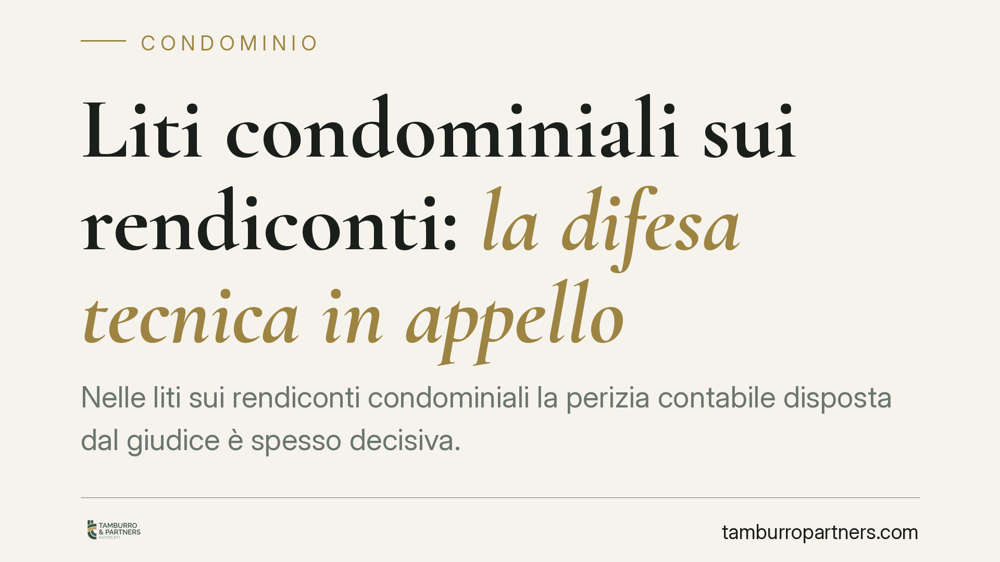

Liti condominiali sui rendiconti: la difesa tecnica in appello
Nelle liti sui rendiconti condominiali la perizia contabile disposta dal giudice è spesso decisiva. Ma il consulente scelto dal condòmino può contestarla anche in appello? La giurisprudenza offre indicazioni utili: le osservazioni critiche del consulente di parte restano ammissibili, purché ancorate ai motivi di gravame. Vediamo cosa significa in concreto per chi contesta i conti del proprio condominio.

Il contesto: perizia contabile e rendiconto condominiale
Quando un condòmino contesta il rendiconto approvato dall'assemblea, il giudice può nominare un CTU (consulente tecnico d'ufficio): un esperto incaricato di ricostruire i conti in modo imparziale. Ciascuna parte può a sua volta nominare un CTP (consulente tecnico di parte), cioè un tecnico di fiducia che segue le operazioni e formula osservazioni nell'interesse di chi lo ha incaricato.
La relazione del CTU pesa spesso in modo determinante sull'esito della causa. Da qui la domanda ricorrente: se la perizia è arrivata in primo grado, il condòmino può ancora servirsi delle critiche del proprio consulente contabile quando la lite prosegue in appello?
Inquadramento normativo
La disciplina della consulenza tecnica nel processo civile si costruisce su più norme del codice di procedura civile, che conviene tenere distinte.
L'art. 194 c.p.c. definisce l'attività del CTU e i poteri di indagine che gli sono attribuiti. L'art. 195 c.p.c. regola il processo verbale delle operazioni e la relazione finale del consulente, prevedendo i termini entro cui le parti possono trasmettere le proprie osservazioni alla bozza di relazione. L'art. 201 c.p.c. disciplina invece la nomina del consulente tecnico di parte e il suo diritto di partecipare alle operazioni peritali e di svolgere osservazioni.
È un quadro coordinato: il CTP non è una figura estranea al processo, ma un soggetto le cui osservazioni rientrano legittimamente nel contraddittorio tecnico. Secondo un orientamento della Cassazione, le critiche del consulente di parte alla perizia possono essere valorizzate anche nel giudizio di appello. *(Il riferimento a una specifica ordinanza va verificato nel testo integrale prima della pubblicazione: se il numero e la massima non risultano confermati, si mantenga il richiamo al principio giurisprudenziale senza indicazione del numero.)*
Perché conta per il condominio
Il punto pratico è che l'appello non riapre l'istruttoria come se il primo grado non ci fosse stato. Non diventa, cioè, la sede di una nuova consulenza: non si ricomincia da capo.
Le osservazioni del consulente di parte, però, non sono "nuove prove": sono argomentazioni tecniche a sostegno di censure già proposte. Per questo devono agganciarsi ai motivi di appello. Se il condòmino contesta, ad esempio, l'imputazione di una spesa straordinaria o il criterio di ripartizione applicato in una tabella millesimale, le note del CTP servono a rafforzare quella specifica critica, non a introdurne di inedite.
È una differenza sottile ma decisiva: le osservazioni che restano dentro il perimetro dei motivi già dedotti sono un contributo utile; quelle che tentano di allargare il campo rischiano l'inammissibilità.
Il ruolo dell'amministratore e la trasparenza contabile
Sul fronte opposto, l'amministratore ha tutto l'interesse a una gestione documentata e ordinata. Un rendiconto redatto con criteri chiari, giustificativi completi e voci tracciabili è la prima difesa contro le contestazioni. Quando i conti sono trasparenti, la perizia contabile tende a confermarli e le critiche del CTP trovano poco spazio.
La cura documentale non è un adempimento formale: è ciò che consente all'amministratore di reggere il confronto tecnico in giudizio, in primo grado e in appello.
Cosa fare in concreto
- Nominate per tempo il consulente di parte. Il CTP va designato all'avvio delle operazioni peritali, non a perizia conclusa, per poter incidere sin dalle prime fasi.
- Depositate le osservazioni nei termini dell'art. 195 c.p.c. Le note alla bozza di relazione sono il momento in cui le critiche entrano formalmente nel processo.
- Ancorate le critiche ai motivi di appello. In secondo grado le osservazioni del CTP devono sostenere censure già proposte, non introdurne di nuove.
- Conservate e ordinate i giustificativi. Se siete amministratori, mantenete documentazione contabile completa e accessibile: è la base di ogni difesa.
- Fate valutare la sostenibilità dell'impugnazione. Prima di procedere in appello, verificate con un legale che le censure contabili abbiano fondamento e siano correttamente formulate.
---
Contributo informativo a cura di Tamburro & Partners Avvocati. Non costituisce parere legale.
Ogni condominio ha una storia a sé.
Se gestisci un'amministrazione e vuoi un confronto su una specifica questione condominiale, scrivi allo studio. Ti rispondiamo entro un giorno lavorativo.